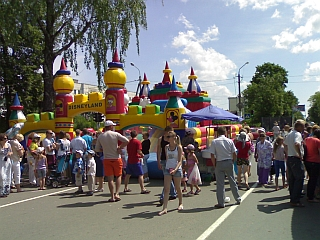
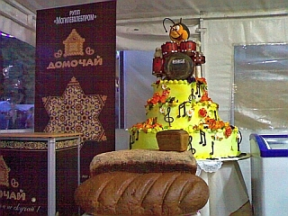
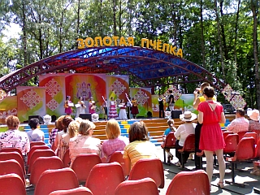
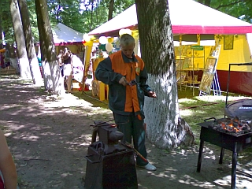
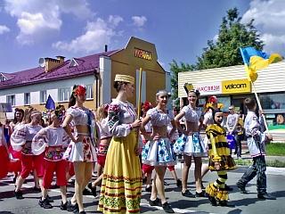

XIII
Международный фестиваль детского творчества
«Золотая пчёлка».

Международный фестиваль детского творчества
«Золотая
пчёлка», являющийся многонациональным праздником творчества
юных исполнителей и занимающий значительное место в культурной жизни
Республики Беларусь прошёл в нашем городе с 29 мая по
2 июня. Фестиваль собрал исполнителей и коллективы из Беларуси,
Казахстана, Латвии, Литвы, Молдовы, России, Словакии, Турции, Украины,
Финляндии, Эстонии. Среди них
учащиеся детских музыкальных и художественных школ, детских школ
искусств, воспитанники художественных студий и кружков, действующих в
учреждениях культуры, образовательных школах, гимназиях, колледжах, а
также в школах-интернатах и детских домах для детей-сирот.
В первый день фестиваля зарубежные делегации побывали в городе
Могилёве, где для ребят была организована
культурно–развлекательная
программа с обзорной экскурсией по областному центру, концерт
«Молодые таланты Могилёвщины» оркестра народных
инструментов имени Л. Иванова с участием лауреатов международных и
республиканских конкурсов, стипендиатов, а на следующий
день все отправились в город
Климовичи. В этот день юные артисты приняли участие в концерте
«Мы — белорусы», а также вечере дружбы и
развлекательной танцевальной программе «Диско-данс»
с участием лауреатов фестиваля «Золотая пчёлка»,
солиста УК «Могилевская областная филармония»
Алекши Чёрного, фольк-шоу балета «Альянс».

Конкурсная программа в этом году традиционно оцениватся в двух
возрастных категориях: младшая (9-12 лет включительно), старшая (13-16
лет включительно). Прослушивания и просмотры проведут в четырёх жанрах
— вокальное искусство (народное, эстрадное пение),
хореографическое искусство (народно-сценический, эстрадный танец),
изобразительное искусство (живопись, графика), декоративно-прикладное
искусство (декоративно-прикладное творчество, художественное ремесло).
В этом году номера жанра «Хореографическое
искусство» оценивались жюри под председательством народного
артиста Беларуси, художественного руководителя ГУ
«Заслуженный коллектив Республики Беларусь Государственный
ансамбль танца Беларуси», профессора Валентина Дудкевича.
Председателем жюри в номинации «Вокальное
искусство» являлся народный артист Беларуси, профессор
кафедры хорового дирижирования УО «Белорусская
государственная академия музыки», художественный руководитель
Национального академического народного хора Республики Беларусь имени
Г.И.Цитовича Михаил Дриневский. Творческим работам конкурсантов в
изобразительном и декоративно-прикладном искусстве давало оценку жюри
под председательством профессора кафедры костюма и текстиля УО
«Белорусская государственная академия искусств»
Юрия Пискуна.
.
В нынешнем году фестиваль «Золотая пчёлка» расширил
формат, увеличив количество фестивальных площадок для отдыха. На улице
Карла
Маркса разместились сельские подворья, торговые ряды.
В городском парке развернулась выставка творческих работ мастеров
декоративно–прикладного искусства «Лавка
чудес», вернисаж детских фольклорных подворий Климовичского,
Кричевского, Костюковичского, Хотимского районов, работала
выставка-продажа белорусских предприятий, производящих товары и
продукты питания для детей, площадь национальных кухонь
«Фестиваль без границ». Желающие могли
поучаствовать в конкурсе караоке. В городском парке
состоялось открытие скульптурной композиции «Золотая
пчёлка».

На главной площадке фестиваля развевались флаги двенадцати
стран-участниц. Завершили третий день торжественное открытие XIІІ
Международного фестиваля детского творчества «Красуй,
садружнасць талентаў, дзяцей усёй планеты!». А после концерта
небо осветили тысячи огней праздничного фейерверка.
1 июня, в Международный день защиты детей, продолжились прослушивания
конкурсантов в районном Центре культуры и Тимоновском сельском Доме
культуры, прошёл
гала-концерт «Таланты Климовщины», конкурсы
«Мисс
золотая
пчёлка», рисунка на мольберте «Фестивальная
страна»,
рисунка на асфальте «Подарок фестивалю».
Сильную половину человечества больше прельщали спортивные состязания.
Благо, их проводилось немало. Можно было и в шашечных, шахматных
турнирах сразиться, и в тире пострелять, и в волейбол поиграть. А
сколько работало аттракционов, каруселей, игровых площадок, на которых
с удовольствием веселилась детвора!
В городском парке
работала выставка-продажа изделий учащихся учреждений среднего
специального образования Могилёвской
области, мастерские с демонстрацией технологического процесса
«Могилёвщина мастеровая».

В районном Центре культуры состоялась церемония награждения победителей
конкурсов рисунка
на мольберте «Фестивальная страна» и детского
рисунка на
асфальте «Подарок
фестивалю». Лучше всех (в своих возрастных категориях)
изобразили
мелом на асфальте главный символ фестиваля — пчелу
—
Евгения Гетко
(Климовичи), Анастасия Гавлинская (Климовичи), Лера Бакустина
(Рославль).
Самыми удачными работами на мольберте признаны рисунки Софии Котовой
(Рославль), Марины Сергеевой (Климовичи), Валерии
Егорченко (Климовичи). Юные художницы были награждены Дипломами І
степени.
Вечером состоялся праздничный концерт — творческие
презентации
стран-участниц фестиваля «Планета дзяцінства —
планета сяброў». Завершила четвёртый день фестиваля
творческая программа «Подарок от МТС».
А в качестве праздничного фейрверка природа преподнесла сильный ливень
с грозой.
Воскресный день 2 июня начался с церемонии вручения дипломов участникам
фестиваля в районном
центре культуры.
В 12 часов началось праздничное шествие «Пад ясным сонейкам
дабра расце Планета Дзяцінства» участников и гостей,
участников творческих проектов среди учащихся средних
общеобразовательных школ, внешкольных и дошкольных учреждений района,
парад молодых семей с колясками «Наше будущее в
детях», победителей районного конкурса
«Зорачка» среди дошкольных учреждений, победителей
районного конкурса «Вясёлка дзяцінства
Клімаўшчыны», победителей конкурса «Мисс
«Золотая пчёлка».
Из-за погодных условий были отменены показательные выступления
спортсменов–парашютистов Могилёвского аэроклуба,
которые должны были совершить прыжки с флагами стран–участниц
фестиваля.
Но на сайте газеты «Знамя юности» была размещена
следующая информация автора Ольги Смоляковой: "В последний
день
фестиваля состоялось еще одно «ноу-хау» XIII
«Золотой
пчелки» - авиашоу, на котором профессиональные летчики
продемонстрировали зрителям высший пилотаж."
Оставим данную информацию на совести автора и администратора этого
сайта.

В амфитеатре, расположенном в городском парке состоялся заключительный
гала-концерт «Бал талантов» и церемония награждения
лауреатов фестиваля.
Самой высокой оценки жюри и Гран-при удостоены:
солист народной эстрадной студии «Лира» Егор
Шаранков (Светлогорск, Гомельская область), вокальный ансамбль
«Мини
Джаз» (Вильнюс, Литва), народный ансамбль танца
«Бусуек
Молдовенеск» (Сынджерей, Молдова), ансамбль современного
танца
«Ракета» (Нижний Новгород, Россия).
В номинации « Художественные ремёсла» Гран-при
заслужила Татьяна Рябкова (Горки). Диплом І степени вручен Марине
Петровой (Чериков).
В номинации «Изобразительное искусство» Гран-при
удостоена Евгения Яблонская (Гродно), Дипломы І степени получили
Анастасия Семенова, Анжела Градова, Николай Крукович, Ульяна Мастикова
(Климовичи).
Заместитель председателя Могилёвского облисполкома Валерий Малашко
вручил специальные призы от Белорусской федерации профсоюзов работников
культуры «За сохранение белорусской песенной
культуры» — детскому ансамблю народной песни и
танца «Даровица» (Новосибирская область, Россия) и
«За пропаганду белорусской культуры» —
солистке Дура Гюрдал (Турция).
Специального приза от Республиканского унитарного промышленного
предприятия «Могилёвхлебпром» была удостоена
Екатерина Носорева (Климовичи), специальный приз от Белорусского
детского фонда получила Алина Мазуркевич (Бобруйск).
Из рук начальника филиала ОАО «Белагропромбанк»
Могилёвского областного управления Андрея Горбеля Дипломы І степени
принимали Рахап Ессам Саид Таха (Жлобин), Матвей Сивцов (Могилёв),
солисты народной эстрадной студии «Лира» Диана
Промашкова и
Егор Шаранков (Гомельская обл.), Малика Сергалиева (Россия), Алина
Мазуркевич (Бобруйск), Александр Минёнок (Витебск), ансамбль народной
песни «Кветачкі» (Пинск), хореографический ансамбль
«Забавушки» (Могилёв), ансамбль танца
«Яз»
(Республика Татарстан, Российская Федерация), танцевальная группа
«Радуга» (Могилёв).
|